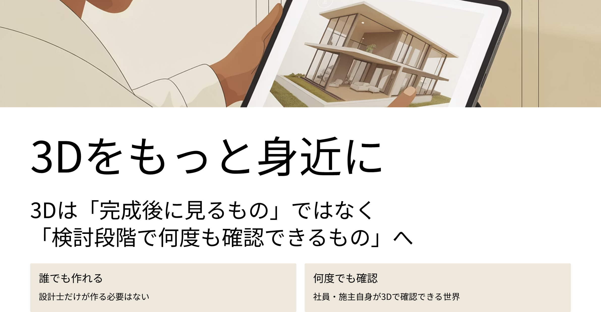
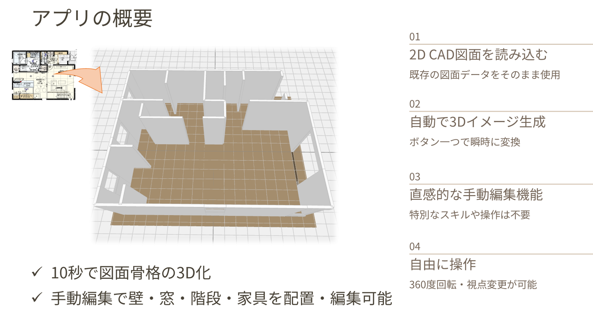
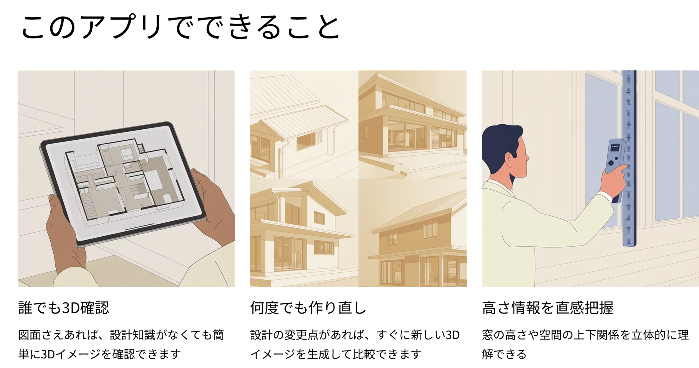
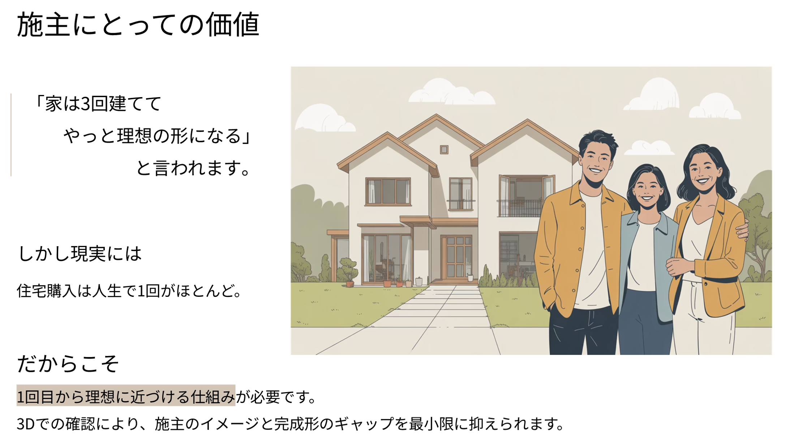

住宅の間取り図面を3D化したい方へ
住宅設計・打ち合わせの現場で、こんな課題を感じたことはありませんか？
- ・ PDFの図面だけでは、部屋の広さや空間イメージが掴みにくい
- ・ 3Dイメージを確認したいが、専門ソフト・外注費用がかかる
- ・ CADを習得する時間がなく、手軽に3D化できるツールが見つからない
そんな課題を解決するために、専用ソフトを使わずに住宅の間取り図面（PDF）を読み込むだけで3D化できる無料ツール「ichijo 3D maker」を開発しました。
一条工務店の間取り図面に対応しており、CAD・専門知識がなくても、PDFをアップロードするだけで数十秒で図面骨格となる3Dパースを自動生成します。




間取り図をPDFかを3D化する方法の比較｜CAD・外注・無料ツールの違い
間取り図面を3D化する手段は、一般的に以下の3つがあります。しかしそれぞれに課題があります。
CADソフト（AutoCAD・Revit など）
- ❌ 操作習得に数ヶ月〜1年かかる
- ❌ 高額なライセンス費用が必要
- ❌ 専門知識がないと使いこなせない
専門業者への3Dパース外注
- ❌ 費用が高い（数万円〜10万円以上）
- ❌ 納期がかかる（数日〜1週間）
- ❌ 修正のたびに費用と時間が発生
✅ ichijo 3D maker（間取り図を無料で3D化）
- ✅ 完全無料でお試し可能
- ✅ CAD・専門知識不要
- ✅ PDFをアップロードするだけで最短10秒で3Dパース生成
- ✅ ブラウザのみで操作完了し、追加インストール不要
- ✅ 生成した3DビューアをHTMLとして共有可能
【プラン・料金】
まずは無料でお試しいただけます。今なら無料登録するだけで、有料会員向けの手動編集機能がすべて使える 10日間の無料トライアルが始まります。
| 機能 | ゲスト 登録不要 |
無料トライアル 無料登録（10日間） |
有料会員 月額 500円 |
|---|---|---|---|
| PDF・画像アップロード | ✓ | ✓ | ✓ |
| 3Dプレビュー生成・閲覧 | ✓ | ✓ | ✓ |
| スケール校正・壁の手動編集 | ― | ✓ | ✓ |
| 窓・扉・家具の配置編集 | ― | ✓ | ✓ |
| 3DビューアHTMLのダウンロード | ✓ | ✓ | ✓ |
| 保存したHTMLから編集を再開 （途中作成した3Dイメージを復元） |
― | ― | ✓ |
🎁 無料トライアルの始め方（10日間）
- 下の「アプリを開く」ボタンからアプリを起動
- サイドバーの「新規会員登録」からメール・パスワードを入力して登録
- 登録完了後、手動編集機能が10日間無料で使えるようになります
⭐ 有料会員の登録方法（月額500円）
- アプリにログイン後、サイドバーの「有料登録」ボタンをクリック
- Stripeの決済ページでクレジットカード情報を入力
- 決済完了後、即時に全機能（HTMLからの編集再開含む）が利用平になります
住宅図面3D化ツール「ichijo 3D maker」の主な特徴
「ichijo 3D maker」は、住宅の間取り図面を手軽に3D化するために開発されたWebアプリです。一条工務店の間取り図（PDF）に特化した自動認識エンジンを搭載しており、壁・開口部などを高精度で検出して3Dモデルを自動生成します。設計担当者・施主・住宅検討中の方など、幅広い方にご利用いただけます。
-
🏠 一条工務店の間取り図面を高精度で3D化
一条工務店の間取りPDFに最適化したアルゴリズムで、壁の構造を自動認識して3D変換します。他のハウスメーカーの図面でもお試しいただけます。 -
📁 PDF・JPEG・PNG 対応
PDFを推奨しますが、スキャンした紙図面の画像（JPEG・PNG）形式にも対応しています。(壁が曲がっていない図面が必要です) -
🔄 ブラウザで360°3Dプレビュー
生成した3Dモデルはブラウザ上でインタラクティブに360°回転・ズームして確認できます。特別なソフトウェアは一切不要です。 -
✏️ 壁・窓・扉・家具の手動編集（会員向け）
自動認識結果を細かく修正できる手動編集機能も搭載。スケール校正や壁の追加・削除、窓や扉の配置変更も直感的な操作で行えます。 -
📤 3DビューアHTMLのダウンロード・共有
生成した3DモデルをHTMLファイルとしてダウンロードでき、施主や関係者へのメール共有も簡単です。インターネット接続なしでも3Dビューアを閲覧できます。
間取り図（PDF）から3D化する手順
- 「3Dプレビューを作成する」ボタンでアプリを開く
- 間取り図（PDF推奨）をアップロード→最短10秒で自動で3Dパース生成
- 改善点はお問い合わせフォームから送信
実際の操作の流れはこちらの動画でご確認いただけます。
よくある質問（FAQ）
- Q. 間取り図を3D化するのは無料でできますか？
- はい。間取り図（PDF・画像）のアップロードから3Dパース生成・HTMLダウンロードまで、登録不要で無料でご利用いただけます。スケール校正・壁の手動編集・窓や扉の配置編集などの高度な機能は会員登録（10日間の無料トライアルあり）が必要です。
- Q. 間取り図を3D化する際にCADソフトは必要ですか？
- 不要です。PDF形式や画像形式（JPG / PNG）の間取り図があれば、ブラウザだけで3D化が完結します。AutoCADやRevitなどの専門ソフトは一切不要です。
- Q. 一条工務店以外の間取り図にも対応していますか？
- メインの最適化対象は一条工務店の間取り図ですが、他のハウスメーカーや設計事務所の図面でも試すことができます。認識精度は図面の形式・スタイルによって異なります。
- Q. どんな図面形式に対応していますか？
- PDF（推奨）、JPEG、PNGに対応しています。スキャンした紙図面の画像でも利用可能です。
- Q. 間取り図のPDFかを3Dパースを生成するのにどのくらい時間がかかりますか？
- 無料の基本機能であれば、図面アップロードから3Dパース生成まで最短10秒程度で完了します。壁や窓を追加・手動編集する場合は別途作業が必要です。
まとめ｜住宅の間取り図面を手軽に3D化するなら ichijo 3D maker
住宅の間取り図面を3D化したい場合、これまではCADソフトの習得や専門業者への外注が必要でした。しかし「ichijo 3D maker」なら、PDFの間取り図をアップロードするだけで、無料かつ即座に3Dパースを自動生成できます。
一条工務店の間取り図面に最適化されており、施主への説明資料作成・設計確認・内覧シミュレーションなど、さまざまな場面でご活用いただけます。CAD不要・専門知識なしで使える住宅図面3D変換ツールとして、ぜひお気軽にお試しください。
【お問い合わせ】
アプリの使い方に関するご質問、機能改善のご提案、不具合のご報告など、お気軽にお問い合わせください。
いただいたご意見はアプリの改善に活かしてまいります。